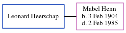

Leonard Heerschap
| [
Calendar
] | [
Surnames Index
] | [
Census Index
] | [
Family History
]
Leonard Heerschap
and was married to Mabel Henn.
Family Tree

Generated by
ged2site
. Last updated on Jun 13, 2024